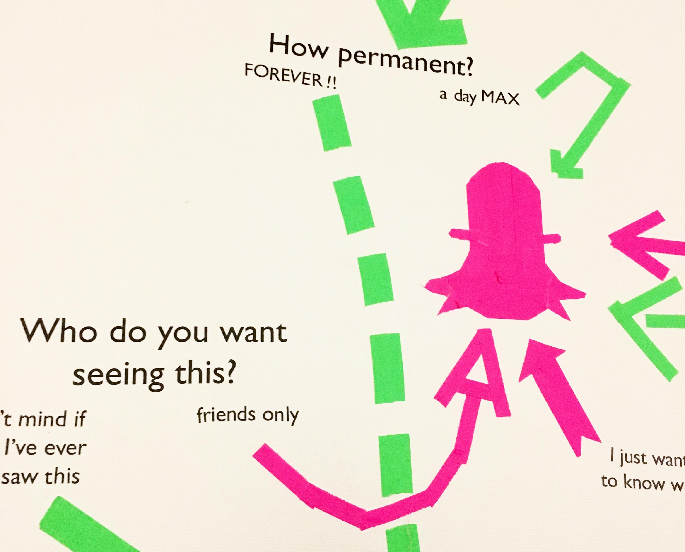
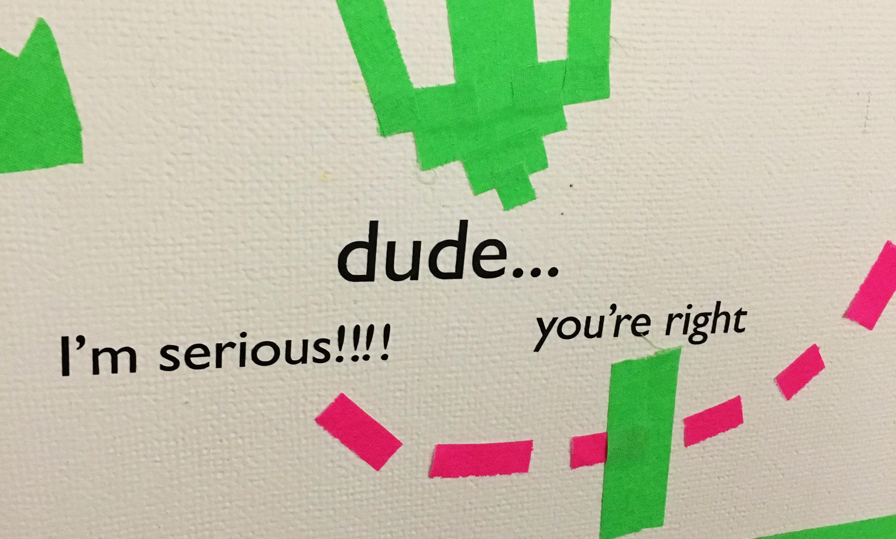
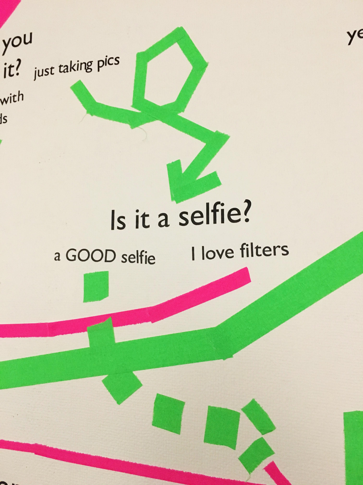
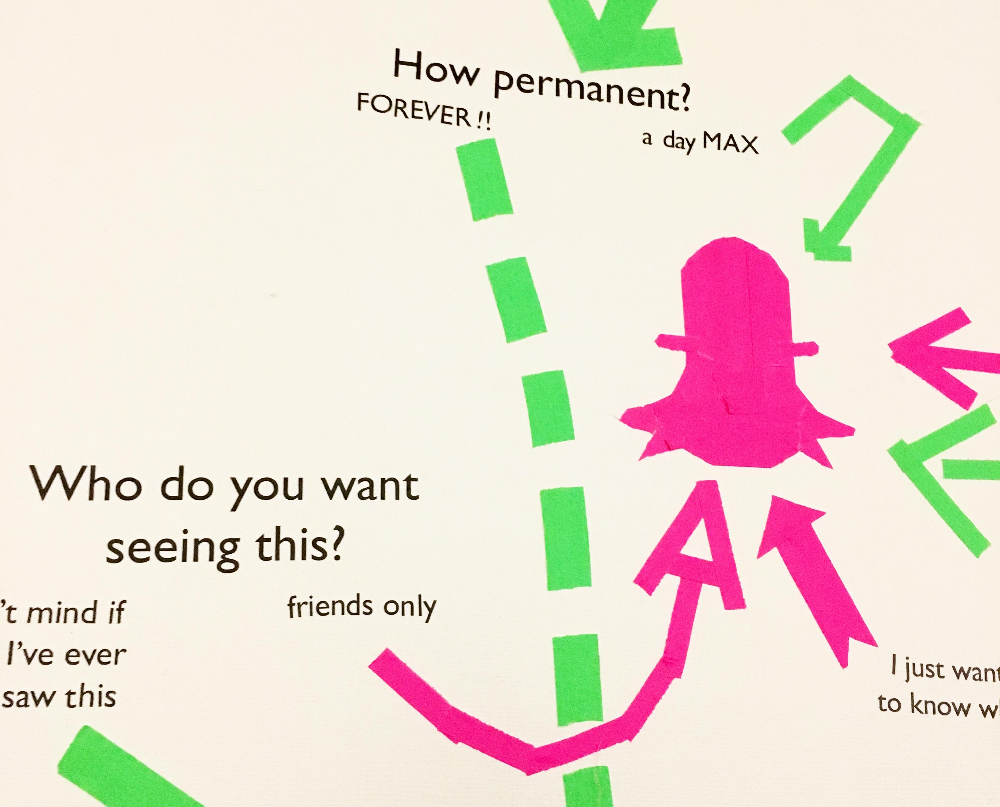
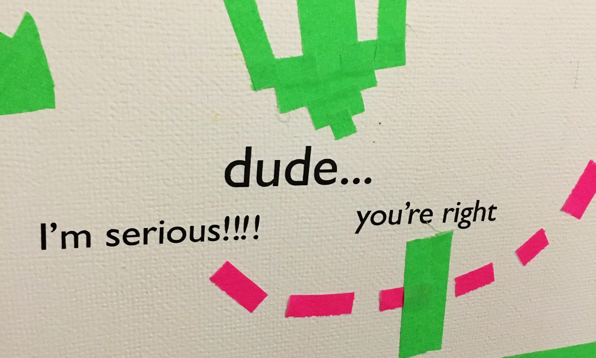
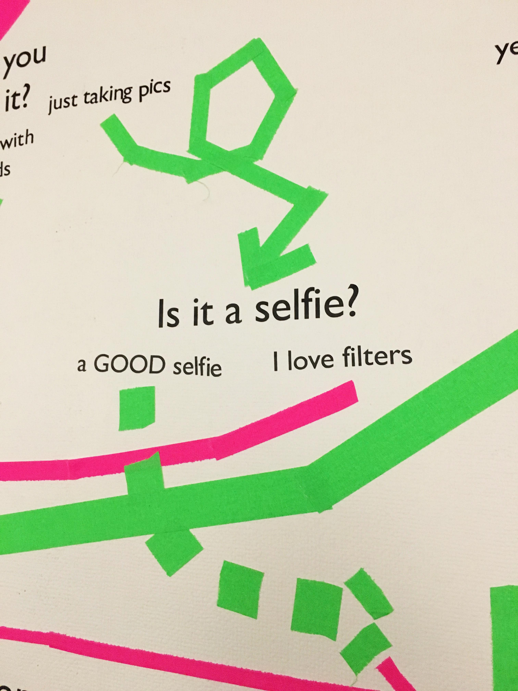

have you ever noticed the unspoken social culture of which social media content is posted on? like, if you're just taking a picture to let people know where you are, you wouldn't post it on facebook, it would go on your snapchat or insta story (i made this before instagram had stories). i wanted to articulate these subtle distinctions, so i made a teen-magazine style quiz.
the installation itself was about 10 ft by 10 ft, installed on a wall and made entirely of vinyl type and gaffer tape. the instal was done in one 10 hour session and all of the arrows and social media icons were made while installing.
 




